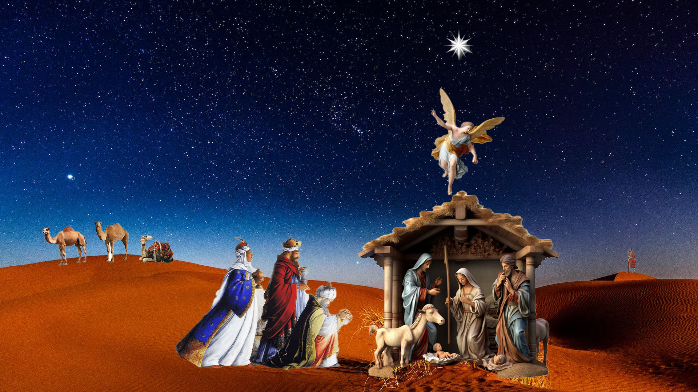

Welcome to my audio retelling of the nativity story. I recorded the narration and edited music and sound effects to immerse the audience ion the spirit of Christmas. I used Photoshop to create an illustration to accompany the recording.
VO: Long ago the prophet Isaiah prophesied a miraculous event that would bring joy to the world. Isaiah: “Behold a virgin, she shall conceive and bear son, and shall name him Immanuel, for God is with us.” VO:Centuries have past and the prophecy has been fulfilled. Behold, a shining star that pinpoints the whereabouts of the child. Three Wise Men: "Look over there, My God in Heaven, we found him. Come on, we must see the child at once." VO: We are in the city in which the prophet Isaiah said the child would be born: the city of Bethlehem. Joseph: "Come on Mary, just one more push. Be strong" Mary:"AHHHH!" (Crying Baby is heard) Joseph: "You did it Mary, oh thank you Heavenly Father." Mary: "Let me see him. Oh, he’s beautiful." VO: Three wise men, arrive just outside the barn. Holding gifts to present to Mary and her child. Three wise Men: "Pardon us, we don’t mean to bother. But we have been studying the prophecy and waiting for this moment to happen. We come to worship your child, for he is the one who will save us from our sins. He is the messiah the world was promised." VO: An angel of the lord, descends from heaven to give the news to Mary and Joseph. Angel: "Do not be afraid. I bring you good news that will cause great joy for all the people. Today in the town of David, a Savior has been born to you; he is the Messiah, the Lord." VO: The three wise men fall to their knees with gifts in their hands. They open them, presenting gifts of gold, frankincense and myrrh. Three wise men: "These are our gifts to you. Take them, in your honor and that of your the child."
Credits for images for illustartion: Nativity,Image2, Angel, TWM,Shining star,isaiah
Credits for sound effects and music: female groans,background music